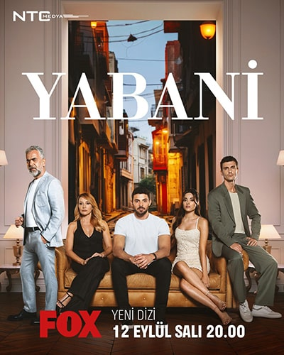
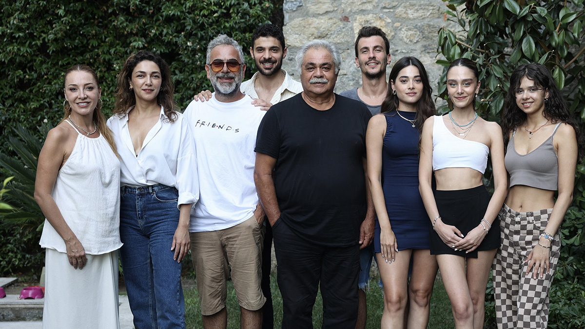

Short story
Yabani dizisinin hikayesi prestijli bir aileye mensup bir çocuğun etrafında dönüyor. Ailesinden ayrılmak zorunda kaldı ve hayatını sokaklarda sürdürmek zorunda kaldı. Eski hayatına yeniden kavuşmaya çalışır. Hikayenin odak noktası ilişkilerin gerçekliğini ortaya çıkarmaktır. Hikayenin temel sorusu, kan ilişkilerinin, ortak zorluklar ve acılar deneyimleriyle kurduğunuz ilişkilerden daha güçlü olup olmadığıdır. Hikâyenin ana karakteri Yaman, tüm hayatını sokaklarda hayatta kalma mücadelesi vererek geçirmiştir. Orada aynı durumda olan üç kişiyle tanıştı. Geçmişte karşılaştıkları zorluklara rağmen devam edip birbirlerine yardım etmeye karar verdiler. Birliklerinde huzuru buldular. Hikayenin kahramanı geçimini sağlamak için kağıt topluyor. Ancak bir gün birisiyle tanışır ve sonrasında hayatı değişir ve onu uzun süre hatırladığı kayıp çocukluğuna sürükler.
Essence
Yabani, yapımcılığını NTC MEDYA'nın üstlendiği, yönetmenliğini M. Çağatay Tosun'un yaptığı bir Türk televizyon dizisidir. Dizi drama türünde olup Hilal Yıldız tarafından yaratılmıştır. Gösterinin arkasındaki yapım şirketi, yapımcıları Fatih Aksoy ve Mehmet Yiğit Alp'in yer aldığı NTC MEDYA'dır. Dizinin prömiyeri 12 Eylül Salı günü yapılacak. Dizinin başrollerinde Halit Özgür Sarı, Simay Barlas, Yurdaer Okur, Dolunay Soysert ve Bertan Asllani yer alıyor.
